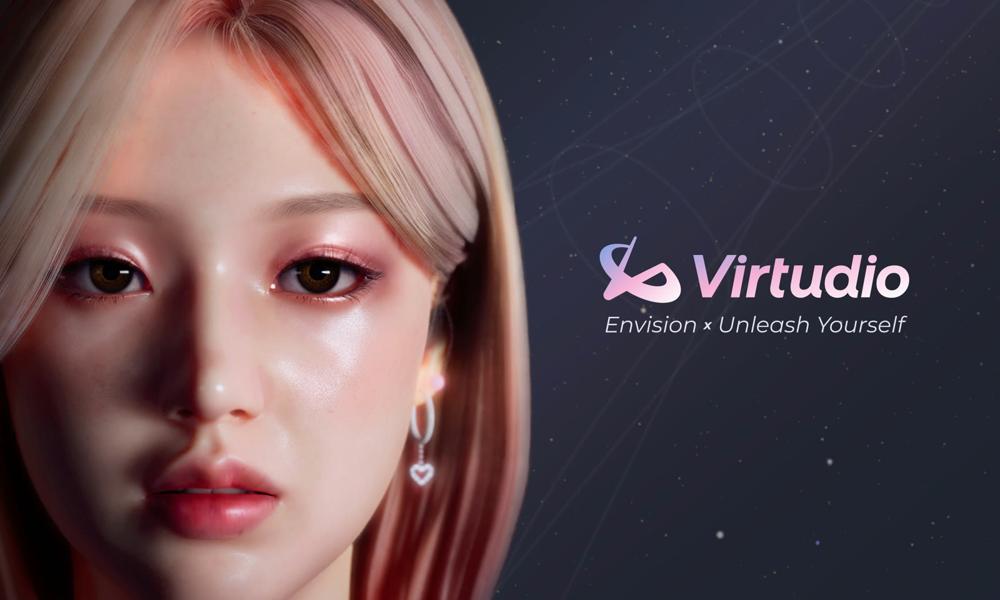
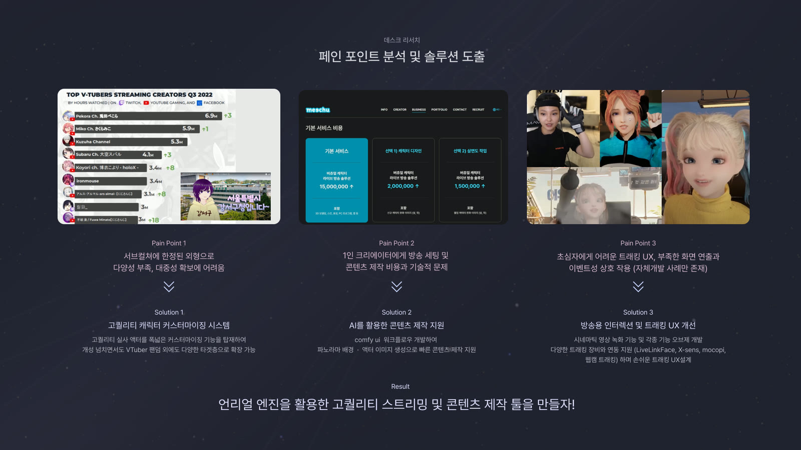
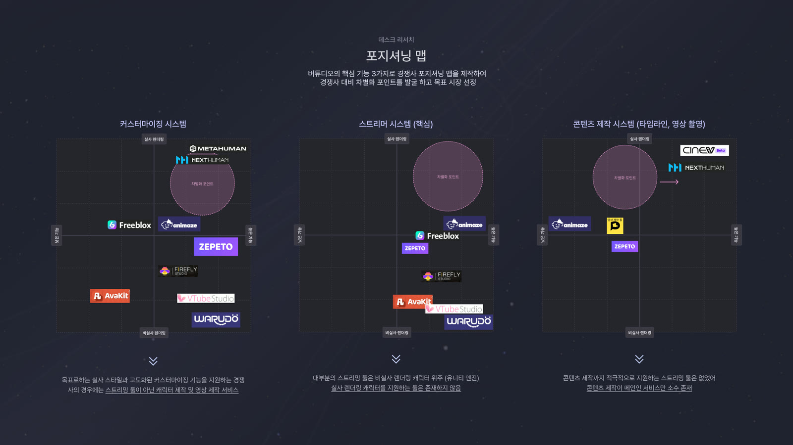
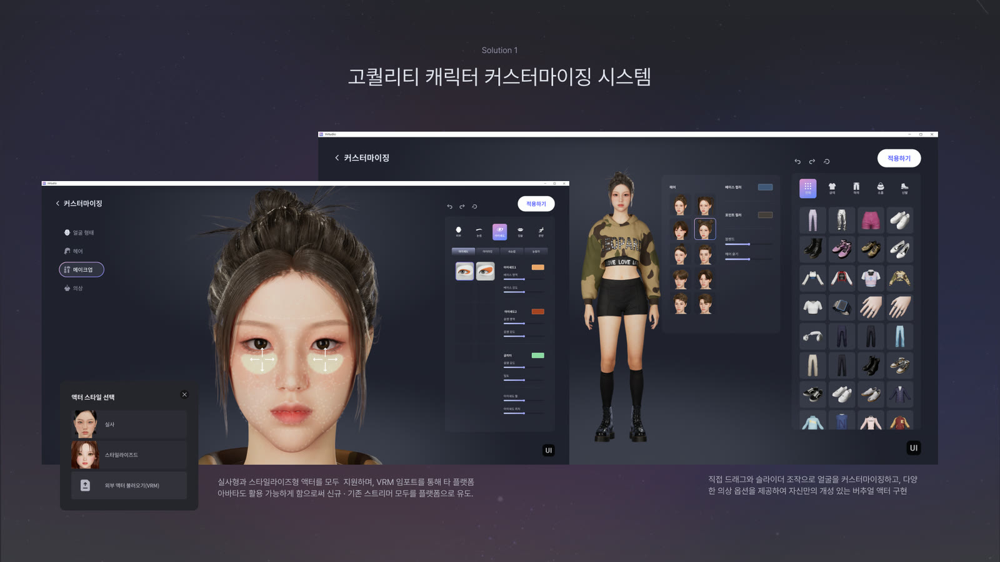
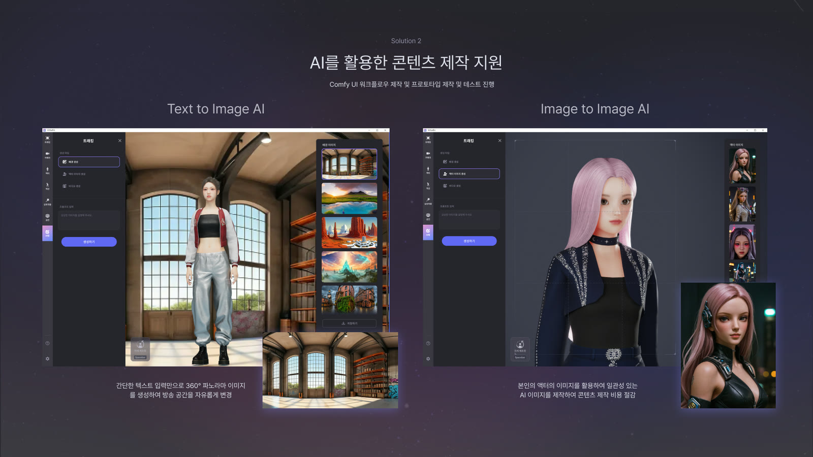
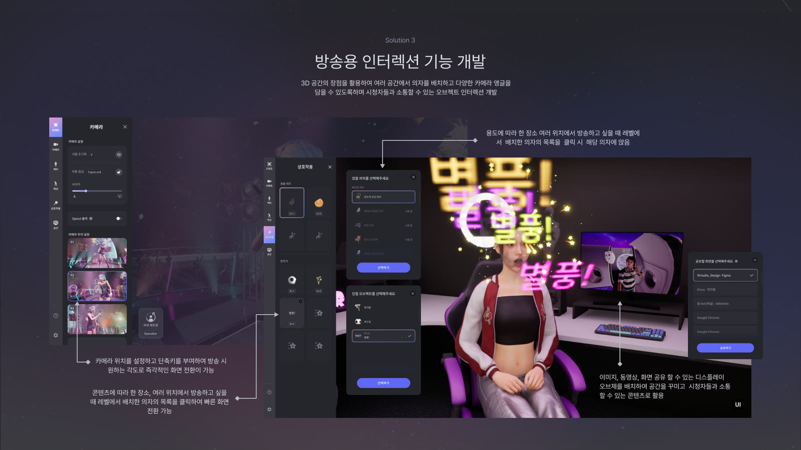
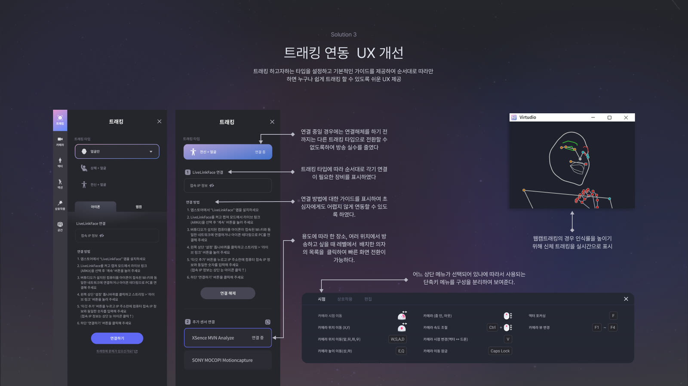

버추얼 스트리머(VTuber) 시장은 빠르게 성장하고 있지만, 서브컬처 중심의 외형에 머물러 대중성이 부족하고 1인 크리에이터는 콘텐츠 부족과 제작 비용 문제를 겪고 있습니다. Virtudio는 언리얼 엔진 기반의 실사형 버추얼 액터로 누구나 쉽게 고품질 방송과 콘텐츠를 만들 수 있게 하는 스트리밍 툴입니다. PO·프로덕트 디자이너·시스템 기획자·테크니컬 아티스트 4인 팀으로 진행했습니다.
프로덕트 디자인(기획·UX/UI·BI)을 100% 담당했습니다. 데스크 리서치로 페인 포인트와 경쟁사 포지셔닝을 정리해 커스터마이징·AI 콘텐츠 제작·방송 인터랙션의 세 가지 솔루션을 도출하고, Figma 설계부터 Unreal UMG 구현까지 직접 진행했습니다.
🏆 Hong Kong Electronics Fair Pitch Top 10 Finalist · Steam 얼리액세스 배포
Steam 페이지 →




